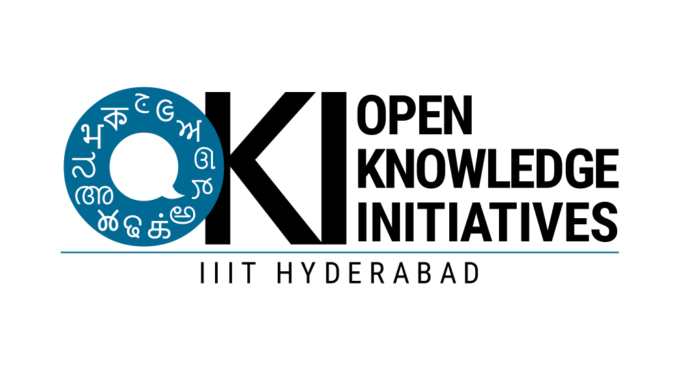

OKI IIIT-H
OPEN SOURCE JOURNEY
Building Knowledge That Reaches Millions
Wikimedia Foundation · MediaWiki Core · Gerrit Code Review · Pywikibot · Wikifunctions · Open Knowledge Initiatives
Selected as WikiClub Tech Envoy at UIT!
Appointed by WikiClub Tech to lead the campus chapter at United Institute of Technology (UIT), organize technical workshops, and mentor new contributors across the Wikimedia open source ecosystem.
WikiClub Tech India
Featured in Technical Impact Report by OKI, IIIT Hyderabad
Global Wikipedia Reach
Live production code across 300+ Wikipedia language projects
MediaWiki Engineering
Core Engine, MinervaNeue, Pywikibot & Wikifunctions
Open Source Storytelling Journey
From my first Git commit to authoring production patches merged into MediaWiki Core, Wikipedia skins, and global translation engines.
Entering Open Source
Driven by a vision of democratizing free knowledge, I stepped into open source software development to contribute to tools used by millions globally.
Road to Wiki Cohort 2
Joined RoadToWiki Cohort 2 organized by WikiClub Tech India under Open Knowledge Initiatives (OKI) at IIIT Hyderabad, gaining structured mentorship.
Learning Git, Gerrit & Phabricator
Mastered enterprise code review workflows: navigating Phabricator task queues, local Docker MediaWiki setups, and submitting patchsets via `git review` to Gerrit.
Code Reviews & Refinements
Engaged in rigorous code review loops with senior MediaWiki maintainers, addressing edge cases, adding unit tests, and adhering to strict PSR/MediaWiki standards.
Merged Contributions
Earned Code-Review +2 approvals across MediaWiki Core, MinervaNeue mobile skin, GrowthExperiments mentorship tools, Pywikibot, and Wikifunctions.
Production Deployments
Patches deployed directly to Wikipedia production servers, enhancing user interface stability, error handling, and multi-language support worldwide.
Community Participation
Active involvement in developer meetups, technical discussions on Meta-Wiki, and supporting fellow student developers in open source onboarding.
1st Place — 1-Week Open Source Marathon
Secured 1st Rank in the 1-Week Open Source Marathon organized by WikiClub Tech UIT, and earned 5 contributions officially recognized in the WikiClub Tech India Technical Impact Report (Jan–Jun 2026) by OKI at IIIT Hyderabad.
WikiClub Tech Envoy at UIT
Selected as WikiClub Tech Envoy at United Institute of Technology. Leading the campus chapter, organizing open source hackathons, conducting Gerrit masterclasses, and mentoring junior student developers to contribute to Wikimedia technical projects.
Road to Wiki Graduation 2026 Honors
Awarded the Best Contributor Award and Most Active Contributor Award by WikiClub Tech India & Open Knowledge Initiatives (OKI, IIIT Hyderabad) for exemplary code merges, code reviews, and ecosystem leadership.
Future Open Source Goals
Targeting Google Summer of Code (GSoC), expanding core MediaWiki architecture contributions, and mentoring the next generation of open source contributors across North India.
Featured Recognition
Five core contributions officially documented and published in the WikiClub Tech India Technical Impact Report (Jan–Jun 2026) by The Open Knowledge Initiatives (OKI) at IIIT Hyderabad.
Add accessor methods for WFFunctionCall internals
Implemented `getFunction()`, `getArgument()`, and `getArguments()` accessor methods to fix encapsulation gaps inside the Abstract Wikipedia Function Orchestrator production codebase.
Handle malformed URI fragments in TitleUtil
Added defensive try-catch error handling around URI fragment decoding in MinervaNeue skin's TitleUtil to prevent URIError exceptions caused by malformed percent-encoded red-links on mobile Wikipedia.
Gender support in mentored exception message
Resolved i18n accessibility gap inside `growthexperiments-exception-no-mentored-text` by implementing proper grammatical gender support, matching international localization standards.
Special:MediaStats and Special:MuteUser page aliases
Contributed page aliases to MediaWiki Core to improve Special Page discoverability for editors without changing canonical routing paths.
Regression test for noreferences section handling
Implemented regression tests in Pywikibot Core verifying that HTML comments inside references sections remain correctly positioned above the closing tag, ensuring parser stability.
Wikimedia Phabricator Profile
Real-time task allocations, active project components, and technical workflow monitoring within the Wikimedia Phabricator task tracker.

Gautam Kumar Maurya
@Gkm563Open Source Contributor • B.Tech CSE (Data Science) • Cybersecurity Enthusiast • AI Developer • Full Stack Developer • United Institute of Technology, Prayagraj
Joined component membership: added as a member for Pywikibot project.
Moved task T381131: Edit summaries should not be shown in Special:TranslationStash from To review to Completed on the RoadToWiki board.
Completed task T431215: Update the misleading footer text on the RoadToWiki board.
Key Contributions Archive
A comprehensive, searchable repository of code patches, extensions, and localization updates submitted across open source ecosystems.
Rest: Fix cookie expire/expiry key inconsistency in EntryPoint
Standardized cookie attribute mapping between 'expire' and 'expiry' inside MediaWiki REST EntryPoint to enforce uniform RFC 6265 cookie parameter processing.
CategoriesDetailsWidget: Fix ampersand rendering in category navigation
Resolved double HTML entity escaping bug (&) when category navigation paths in UploadWizard contain subcategory ampersands.
Update Magahi namespace translations
Added localized namespace names and canonical aliases for Magahi (mag) in MediaWiki Core to improve localized wiki navigation.
[doc] Add Gkm563 to AUTHORS.rst
Official recognition of Gautam Kumar Maurya (Gkm563) in Pywikibot AUTHORS.rst upstream documentation.
Add regression test for comments in noreferences section
Implemented automated regression test coverage ensuring Pywikibot accurately parses HTML/wikitext comments inside noreferences sections.
Remove nonexistent autopatrolled group from Outreach Wiki
Cleaned up legacy user group permissions configuration for Wikimedia Outreach Wiki by removing deprecated autopatrolled group definitions.
Add Ukrainian translation for MediaStatistics
Added Ukrainian (uk) localization for Special:MediaStatistics administrative reporting page in MediaWiki Core.
Mark Experiment::setSchema as deprecated
Refactored TestKitchen experimentation extension to deprecate mutable Experiment::setSchema in favor of immutable configuration.
Add gender support to no mentored exception message
Integrated {{GENDER:}} support into newcomer mentorship exception messages to ensure correct grammatical agreements across localized languages.
Handle malformed URI fragments in TitleUtil
Added defensive try-catch decoding for percent-encoded URI fragments in MinervaNeue mobile skin to prevent client-side URIError exceptions.
Add Special:MediaStats alias for Special:MediaStatistics
Created Special:MediaStats shortcode alias redirect pointing directly to Special:MediaStatistics page in MediaWiki Core.
Add Special:MuteUser alias for Special:Mute
Added Special:MuteUser alias for Special:Mute to improve user blocking and moderation accessibility.
Add accessors for WFFunctionCall internals
Implemented getFunction(), getArgument(), and getArguments() accessors to enforce strict encapsulation in Abstract Wikipedia orchestrator.
Add Tsishingini (tsw) language metadata
Integrated language profile parameters, script registry, and autonym mappings for Tsishingini into Wikimedia's core global language dataset.
Add Southern Uzbek (uzs) to language-data
Integrated configuration maps and language registry tables for Southern Uzbek into Wikimedia's core global dataset.
Add Tsishingini & Southern Uzbek to Translatewiki
Registered language code mappings and localization tables inside Translatewiki enabling translation pipelines for two global languages.
Prevent database error when notifying no languages
Added guard condition against querying empty language arrays to prevent SQL exceptions when notifying translators with no languages selected.
Do not allow users to select current wiki as foreign wiki
Prevents circular foreign wiki notification loops by filtering out the current database key from selectable notification wikis.
SpecialTranslatorSignup: Add top margin to legal warning box
UI fix adding appropriate margin above the legal warning callout box on the translator registration special page.
Remove redundant PHPDoc comments
Cleaned up redundant and obsolete PHPDoc annotations across TranslationNotifications notification dispatcher classes.
Rest: Avoid repeating HTTP verb in autogenerated operation IDs
REST router generator optimization to avoid repeating HTTP verbs (e.g. getGetPageHistory) in automatically generated OpenAPI operation IDs.
Rest: Support path-level summary & description in OpenAPI generation
Extended MediaWiki REST OpenAPI generator to support path-level documentation blocks, enriching generated API specifications.
REST: Add conditional request support to specs & discovery endpoints
Added HTTP ETag (If-None-Match) and If-Modified-Since 304 conditional caching to MediaWiki REST discovery and OpenAPI specification endpoints.
TransformHandler: Avoid undefined array key "body" on malformed payload
Added defensive payload validation to avoid PHP 8 undefined array key runtime warnings on malformed JSON bodies in Parsoid transform endpoints.
HelpPanel: Fix grey header icons in quick tips dialog
Fixed OOUI icon opacity and styling anomalies inside GrowthExperiments newcomer HelpPanel quick tips dialog.
editcheck: Support configurable wholeWord matching for TextMatchEditCheck
Implemented configurable wholeWord regex boundary matching inside VisualEditor EditCheck to eliminate false positive automated suggestions.
HelpPanel: fix grey header icons in quick tips dialog
Initial patchset addressing icon opacity, superseded by clean patchset Change 1276113.
style: Remove unnecessary opacity override for process dialog icons
CSS cleanup patchset consolidated into primary styling change.
Fix image option parsing inside tables
Architectural exploration of table image syntax parsing within the Parsoid parser service.
Add gender support to no mentored exception message
Alternative patchset consolidated into merged production Change 1289010.
Wikimedia Ecosystem Matrix
Repositories, engines, and platforms actively contributed to within the Wikimedia movement.
MediaWiki Core
Core PHP engine powering Wikipedia. Contributed Special Page alias routing definitions and core backend stability updates.
MinervaNeue Skin
Official mobile interface for Wikipedia. Resolved client-side URI fragment parsing errors to ensure seamless mobile reading.
GrowthExperiments
New editor onboarding tools. Implemented grammatical gender support in mentorship exception messages across languages.
Function Orchestrator
Abstract Wikipedia (Wikifunctions) backend. Added accessor methods to WFFunctionCall for strict encapsulation.
Pywikibot Core
Python framework for Wikipedia bots. Added regression test coverage for references section comment positioning.
Translatewiki.net
Global localization hub. Registered new language codes (Tsishingini, Southern Uzbek) into central translation tables.
Community & Mentorship
Active engagement with developer groups, technical workshops, and student mentorship initiatives.
WikiClub Tech India
Active participant in RoadToWiki Cohort 2, organized under Open Knowledge Initiatives (OKI) at IIIT Hyderabad.
GDG Prayagraj
Volunteer and technical speaker supporting local Google Developer Group events and open-source workshops in Uttar Pradesh.
RoadToWiki Peer Support
Guiding new contributors through Git configuration, Gerrit patch creation, and Phabricator task claiming.
Open Source Gallery
Photographic evidence capturing community meetups, technical impact reports, and open source milestones.

Future Open Source Roadmap
Long-term commitments to open-source software engineering, community leadership, and global knowledge infrastructure.
Google Summer of Code (GSoC)
Preparing proposals for MediaWiki Core and Abstract Wikipedia projects to drive major architecture improvements under GSoC.
Deeper MediaWiki Core Refactoring
Expanding contributions to MediaWiki parser services, modern skin hooks, and REST API endpoints.
Mentoring New Contributors
Leading technical workshops and mentoring student developers across India to step into open source maintenance.